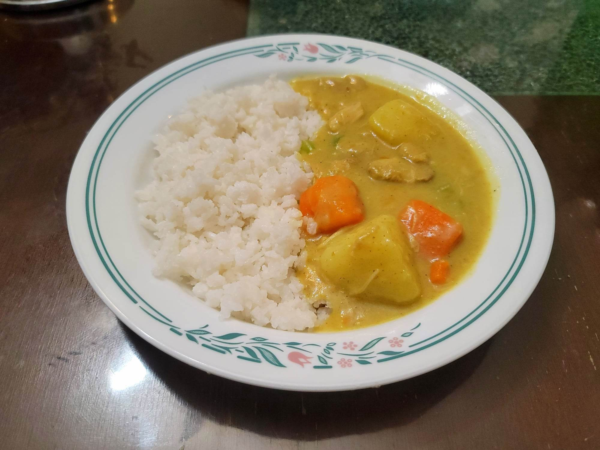

Kale Moa

Ingredients:
- 1 1/2 lb Chicken thigh or breast, skinless and boneless, cubed
- 1/4 cup Oil
- 1 large Onion, sliced
- 4 cloves Garlic, minced
- 1 inch Ginger, grated or minced and pounded
- 2 tbsp Curry powder
- 2 cups Water
- 2 cups Coconut milk
- 4 medium Potatoes, peeled, cut into 2 inch pieces
- 1 large Carrot, peeled, chopped
- 1 stick Celery, sliced
- 6 tbsp Flour, mixed with 6 tbsp Water to make a slurry
- Salt, to taste
- Black pepper, to taste
Instructions:
- Heat the oil in a pot over medium heat. Then add in the onion and sauté until softened, about 7 minutes. Then add in the garlic, ginger, and curry powder and sauté another minute.
- Add in the chicken, water, and coconut milk. Bring to a boil and then reduce to low. Cover and let cook for 20 minutes.
- Add in the potatoes, carrot, and celery and bring back to a boil. Then reduce to low and cover. Cook for another 20 minutes or until the potatoes are fork tender.
- Remove the cover and turn the heat up to medium. Stir constantly while slowly pouring in the flour and water slurry. Stir constantly until thickened. Then reduce the heat to low.
- Season with salt and pepper to taste. Serve hot.